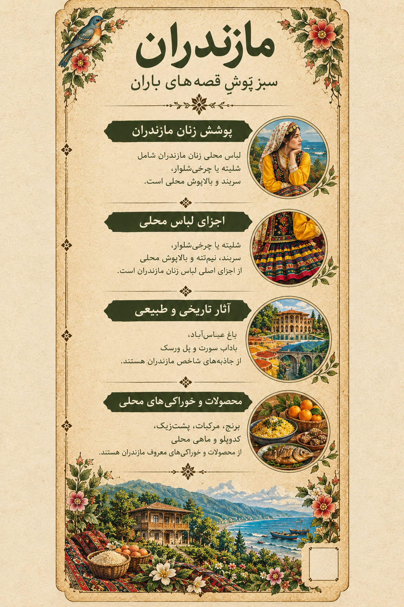

۱. تصویر مازندران؛ روایت یک سرزمین
1. Mazandaran in Art: A Land's Story
در این اثر، پوشش رنگارنگ زن مازندرانی در کنار جنگل، دریا، معماری بومی و نشانههایی از زندگی محلی قرار گرفته است. هر عنصر، بخشی از پیوند مردم این سرزمین با طبیعت و خاطرههای فرهنگی آن را روایت میکند.
This artwork brings together colorful women's dress, forests, the sea, local architecture, and elements of everyday life. Each detail reflects the bond between the people and the natural and cultural heritage of the region.

اثر تصویری مازندران از مجموعه «ایران، هزار رنگ»
The Mazandaran artwork from “Iran, A Thousand Colors”
از سبزی جنگل تا آبی دریا، هر رنگ مازندران قصهای از زندگی و سرزمین دارد.
From the green of the forest to the blue of the sea, every color of Mazandaran tells a story of land and life.
این تصویر، اثر هنری مجموعه است؛ توضیحات این صفحه برای معرفی فرهنگی و تاریخی استان ارائه شدهاند.
This is the original artwork created for the collection. The descriptions provide cultural and historical context about the province.
۲. پوشش زنان مازندران؛ رنگ در حرکت
2. Women's Dress in Mazandaran: Color in Motion
پوشاک سنتی زنان مازندران در نواحی مختلف یکسان نبوده است. رنگهای شاد، دامنهای چیندار مانند شَلیته یا چرخیشلوار، سربند و روسری، و بالاپوشهای محلی از ویژگیهایی هستند که در توصیف برخی پوششهای این منطقه دیده میشوند. شکل لباس با توجه به روستا، دوره تاریخی، شیوه زندگی و موقعیت استفاده تفاوت داشته است.
Traditional women's clothing in Mazandaran has varied across local areas. Bright colors, pleated skirts such as shaliteh or charkhi-shalvar, headscarves, and local upper garments appear in descriptions of some regional styles. Clothing has varied by village, historical period, lifestyle, and occasion.

لیبل اختصاصی مازندران؛ راهنمای تصویری پوشش، جاذبهها و خوراک محلی
Mazandaran's exhibition label: a visual guide to clothing, landmarks, and local food
شَلیته و چرخیشلوارShaliteh and Charkhi-Shalvar
دامنهای چیندار و پرحجم از عناصر شناختهشده در برخی توصیفهای پوشاک سنتی زنان مازندران هستند. نام و شکل دقیق لباس میتواند در نواحی مختلف تفاوت داشته باشد.Pleated, full skirts are recognized elements in descriptions of some traditional women's clothing in Mazandaran. Names and exact styles can vary between local areas.
روسری و سربندHeadscarves and Headbands
پوشش سر بخشی از ترکیب لباس محلی بوده است. رنگ، جنس پارچه و شیوه بستن آن با توجه به سنتهای محلی و کاربرد لباس تغییر میکرد.Head coverings formed part of local dress. Their colors, fabrics, and tying styles varied according to local customs and the purpose of the outfit.
بالاپوش و نیمتنهUpper Garments and Bodices
بالاپوشهای محلی در کنار دامن و پوشش سر، ترکیب کامل لباس را شکل میدادند. برای معرفی دقیق هر نوع، توجه به منطقه و مستندات تصویری اهمیت دارد.Local upper garments, combined with skirts and head coverings, completed the outfit. Identifying each style accurately requires attention to locality and visual documentation.
تنوع پوشش در روستاهاVillage Dress Traditions
در معرفی پوشاک زنان روستاهای مازندران باید تفاوتهای محلی حفظ شود؛ یک لباس را نمیتوان بدون مدرک به همه نواحی استان نسبت داد.Local differences should be preserved when documenting women's dress in Mazandaran's villages. One style should not be attributed to the entire province without evidence.
۴. تاریخ، معماری و طبیعت
4. History, Architecture, and Nature
باغ عباسآباد بهشهرAbbasabad Garden, Behshahr
باغ تاریخی عباسآباد از آثار برجسته دوره صفوی در مازندران است. مجموعه باغ، آب و سازههای تاریخی آن نمونهای از پیوند معماری و طبیعت به شمار میآید.The historic Abbasabad Garden is a major Safavid-era heritage site in Mazandaran. Its garden, water features, and historic structures demonstrate the relationship between architecture and nature.
باداب سورتBadab-e Surt
چشمههای پلکانی باداب سورت با رنگها و رسوبات معدنی خود از چشماندازهای طبیعی شاخص استان هستند. شکلگیری این پلههای طبیعی طی فرایندی طولانی در طبیعت رخ داده است.The terraced springs of Badab-e Surt are among the province's distinctive natural landscapes, known for their colors and mineral deposits. Their terraces formed through long-term natural processes.
پل ورسکVeresk Bridge
پل ورسک در مسیر راهآهن شمال ایران و در میان ارتفاعات البرز قرار دارد. این سازه مهندسی به یکی از نشانههای شناختهشده مسیرهای کوهستانی مازندران تبدیل شده است.Veresk Bridge lies along northern Iran's railway route amid the Alborz Mountains. This engineering landmark has become one of the best-known features of Mazandaran's mountain routes.
جنگلهای هیرکانی و دریای خزرHyrcanian Forests and the Caspian Sea
جنگلهای هیرکانی، کوهستان و ساحل دریای خزر در کنار هم تنوع طبیعی مازندران را شکل میدهند. این چشماندازها بر کشاورزی، خوراک، معماری و زندگی مردم منطقه اثر گذاشتهاند.Hyrcanian forests, mountains, and the Caspian coast together shape Mazandaran's natural diversity. These landscapes influence agriculture, food, architecture, and local life.